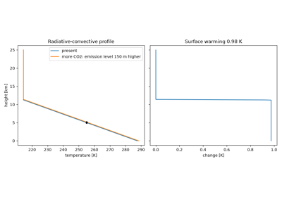
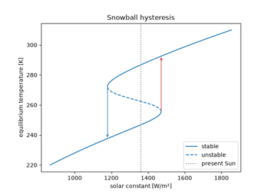
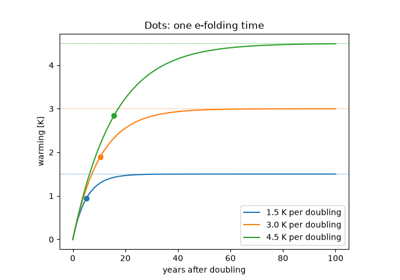
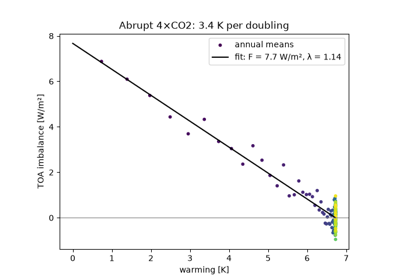
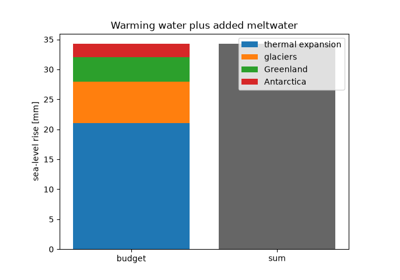

Breakthroughs in Climate#
Climate science began as a puzzle about why the Earth is as warm as it is.
Fourier saw that the atmosphere must trap heat. Foote and Tyndall found which
gases do it, and Stefan’s law put a number on planetary emission. Arrhenius and
Callendar asked what more carbon dioxide would do, and Milanković linked the
ice ages to the Earth’s orbit. After 1950 the questions became quantitative:
how much carbon stays in the air, how convection shapes the atmosphere, how
feedbacks amplify a forcing, and how long the ocean delays the response. This
chronology traces the results behind earthsciencekit.climate. Every
example uses deterministic synthetic inputs and illustrative coefficients;
none is a calibrated projection.
1824 – Fourier’s Greenhouse#
Joseph Fourier asked what sets the temperature of the Earth. He concluded that sunlight alone, radiated straight back to space, would leave the planet far colder than it is, and that the atmosphere must hold heat in, like the glass of a hot box. In modern terms a planet of albedo 0.3 in radiative balance has an effective temperature near 255 K, while the mean surface is about 288 K. The 33 K difference is the greenhouse effect.
Implementation: absorbed_solar() and
effective_temperature().
References: J. Fourier, “Remarques générales sur les températures du globe terrestre et des espaces planétaires,” Annales de Chimie et de Physique 27 (1824): 136-167.
1856 – Foote’s Heated Carbon Dioxide#
Eunice Foote placed glass cylinders filled with different gases in sunlight
and found that the one holding carbon dioxide heated most and cooled
slowest. She inferred that an atmosphere richer in it would make the Earth
warmer. John Tyndall measured the infrared absorption of the same gases three
years later. One atmospheric layer that absorbs infrared and re-emits it both
up and down raises the surface temperature by up to 2**0.25.
Implementation: greenhouse_surface_temperature()
(new). The example checks that the layer and surface together emit to space
exactly what the planet absorbs.
References: E. Foote, “Circumstances affecting the heat of the sun’s rays,” American Journal of Science and Arts 22 (1856): 382-383.
1879 – Stefan’s Fourth-Power Law#
Josef Stefan fitted earlier measurements, among them Tyndall’s on a glowing platinum wire, and found that radiated power grows as the fourth power of the absolute temperature. Ludwig Boltzmann derived the law from thermodynamics in 1884. It converts a planet’s temperature into its outgoing longwave radiation.
Implementation: outgoing_longwave(). The
example recovers the ratio of 11.6 between Tyndall’s two temperatures.
References: J. Stefan, “Über die Beziehung zwischen der Wärmestrahlung und der Temperatur,” Sitzungsberichte der Kaiserlichen Akademie der Wissenschaften, Mathematisch-Naturwissenschaftliche Classe 79 (1879): 391-428.
1896 – Arrhenius’s Sensitivity to CO2#
Svante Arrhenius computed by hand how the surface temperature at each latitude would change if atmospheric carbon dioxide were multiplied or divided. The warming grew with the logarithm of the concentration, so each doubling added about the same amount, which he put at 5 to 6 °C. A logarithmic forcing over a linear restoring reproduces that rule.
Implementation: co2_forcing() and
equilibrium_warming().
References: S. Arrhenius, “On the influence of carbonic acid in the air upon the temperature of the ground,” Philosophical Magazine 41 (1896): 237-276.
1920 – Milanković’s Orbital Insolation#
Milutin Milanković calculated the sunlight reaching each latitude through the year, and how it changes as the Earth’s obliquity, eccentricity and precession vary over tens of thousands of years. He proposed that ice sheets grow when summers at high northern latitudes receive little sunlight. The daily mean depends on latitude, the Sun’s declination and the Earth-Sun distance. Its global mean stays at a quarter of the solar constant.
Implementation: daily_insolation() (new).
The example checks the global mean and the polar value at the solstice.
References: M. Milankovitch, Théorie mathématique des phénomènes thermiques produits par la radiation solaire (Paris: Gauthier-Villars, 1920).
1938 – Callendar’s Measured Warming#
Guy Stewart Callendar compiled records from about 200 weather stations and
showed that the world had warmed since the late 19th century. He attributed
the warming to carbon dioxide from burning fuel and estimated about 2 °C per
doubling. The radiative response alone, the Planck restoring coefficient
4 sigma T**3, gives only about 1 K, so feedbacks must amplify it.
Implementation: planck_feedback(), checked
against the slope of outgoing_longwave().
References: G. S. Callendar, “The artificial production of carbon dioxide and its influence on temperature,” Quarterly Journal of the Royal Meteorological Society 64 (1938): 223-240.
1957 – Revelle and Suess’s Buffer Factor#
Roger Revelle and Hans Suess showed that the carbonate chemistry of seawater limits how much carbon dioxide the ocean takes up. A given fractional rise in atmospheric CO2 is matched by a rise in dissolved carbon about ten times smaller. They concluded that much of the carbon from fuel would stay in the air, and that humanity was carrying out “a large scale geophysical experiment”.
Implementation: carbon_airborne_fraction().
The example computes the equilibrium partition between air and ocean for a
range of buffer factors.
References: R. Revelle and H. E. Suess, “Carbon dioxide exchange between atmosphere and ocean and the question of an increase of atmospheric CO2 during the past decades,” Tellus 9 (1957): 18-27.
1958 – Keeling’s Curve#
Charles David Keeling began continuous, calibrated measurements of carbon
dioxide at Mauna Loa and the South Pole. Within two years the record showed a
seasonal cycle from northern vegetation and a year-on-year rise. When
emissions grow steadily and each pulse decays over a time scale tau,
the fraction left in the air tends to g tau / (1 + g tau).
Implementation: carbon_decay(), convolved
with a growing emission history. The example checks the convolution against
its closed form.
References: C. D. Keeling, “The concentration and isotopic abundances of carbon dioxide in the atmosphere,” Tellus 12 (1960): 200-203.
1967 – Manabe and Wetherald’s Radiative-Convective Equilibrium#
Syukuro Manabe and Richard Wetherald computed the temperature of a single atmospheric column in which radiation and convection balance and relative humidity stays fixed. Doubling CO2 warmed the surface by about 2.3 K and cooled the stratosphere, the first physically consistent estimate of climate sensitivity. In the simplest version the troposphere follows a fixed lapse rate through the emission level; raising that level warms the surface by the lapse rate times the rise.
Implementation: radiative_convective_temperature()
(new).
References: S. Manabe and R. T. Wetherald, “Thermal equilibrium of the atmosphere with a given distribution of relative humidity,” Journal of the Atmospheric Sciences 24 (1967): 241-259.

Manabe and Wetherald’s radiative-convective equilibrium (1967)
1969 – Budyko and Sellers’s Ice-Albedo Feedback#
Mikhail Budyko and William Sellers independently built energy-balance models with ice that reflects more sunlight than open ground or sea. Both found that a drop in sunlight of a few percent could glaciate the whole planet, and that the frozen state would persist until the Sun was much brighter. Inverting the energy balance traces the full S-shaped curve of equilibria and its two folds.
Implementation: ice_albedo() and
equilibrium_solar_constant() (new).
References: M. I. Budyko, “The effect of solar radiation variations on the climate of the Earth,” Tellus 21 (1969): 611-619; W. D. Sellers, “A global climatic model based on the energy balance of the earth-atmosphere system,” Journal of Applied Meteorology 8 (1969): 392-400.

Budyko and Sellers’s ice-albedo feedback (1969)
1976 – Hasselmann’s Stochastic Climate#
Klaus Hasselmann showed that slow climate variability needs no slow cause.
The ocean integrates fast, random weather forcing as a heavy particle
integrates molecular kicks, and the result is red noise. The spectrum is flat
below the frequency lambda / (2 pi C) and falls as the inverse square of
frequency above it.
Implementation: red_noise_spectrum()
(new). The example compares a seeded simulation with the spectrum and its
variance.
References: K. Hasselmann, “Stochastic climate models. Part I. Theory,” Tellus 28 (1976): 473-485.
1979 – The Charney Report’s Sensitivity Range#
A National Academy of Sciences panel chaired by Jule Charney assessed the
models of the day. It concluded that doubling CO2 would warm the Earth by
about 3 K, probably between 1.5 and 4.5 K, and that the ocean would delay the
warming by decades. In a one-box model the delay is C / lambda, so a more
sensitive climate also responds more slowly.
Implementation: response_timescale() and
step_temperature().
References: J. G. Charney et al., Carbon Dioxide and Climate: A Scientific Assessment (Washington, DC: National Academy of Sciences, 1979).

The Charney report’s sensitivity range (1979)
1981 – Hansen’s Ocean Heat Uptake#
James Hansen and colleagues compared a one-dimensional climate model with the temperature record of the previous century. They showed that heat capacity of the ocean mixed layer sets how quickly the warming appears, and that until equilibrium part of the forcing goes into the ocean. The heat stored equals the integrated imbalance between forcing and radiative restoring.
Implementation: heat_capacity_column(),
heat_uptake() and
simulate_one_box().
References: J. Hansen, D. Johnson, A. Lacis, S. Lebedeff, P. Lee, D. Rind and G. Russell, “Climate impact of increasing atmospheric carbon dioxide,” Science 213 (1981): 957-966.
1998 – Myhre’s Forcing Formulas#
Gunnar Myhre and colleagues fitted simple expressions to line-by-line
radiative-transfer calculations for the well-mixed greenhouse gases. CO2
forcing is 5.35 ln(C / C0). Methane and nitrous oxide grow as square roots
of concentration, less a term for the band they share. The IPCC adopted the
formulas in 2001.
Implementation: co2_forcing() (with the
coefficient 5.35), methane_forcing() and
nitrous_oxide_forcing() (new).
References: G. Myhre, E. J. Highwood, K. P. Shine and F. Stordal, “New estimates of radiative forcing due to well mixed greenhouse gases,” Geophysical Research Letters 25 (1998): 2715-2718.
2004 – Gregory’s Forcing-Feedback Regression#
Jonathan Gregory and colleagues showed how to diagnose forcing and feedback from one run in which CO2 is increased abruptly. Plotting the top-of-atmosphere imbalance against the warming gives a line whose intercept is the forcing and whose slope is minus the feedback. It crosses zero at the equilibrium warming, which can thus be estimated without running to equilibrium.
Implementation: gregory_regression()
(new). The tests check that it recovers the parameters of a one-box run
exactly.
References: J. M. Gregory, W. J. Ingram, M. A. Palmer, G. S. Jones, P. A. Stott, R. B. Thorpe, J. A. Lowe, T. C. Johns and K. D. Williams, “A new method for diagnosing radiative forcing and climate sensitivity,” Geophysical Research Letters 31 (2004): L03205.

Gregory’s forcing-feedback regression (2004)
2005 – Thermal Expansion and Ice Melt in the Sea-Level Budget#
John Antonov, Sydney Levitus and Timothy Boyer used ocean temperature profiles back to 1955 to estimate thermosteric sea-level rise: about 0.33 mm per year from the upper 700 m over 1955-2003, and 0.40 mm per year from the upper 3000 m over 1955-1998. Together with glacier and ice-sheet mass balance, this allowed the sea-level budget to be checked: observed rise should equal the expansion of warming water plus added meltwater. About 362 Gt of water raises the global ocean by 1 mm.
Implementation: thermal_expansion_sea_level()
and water_equivalent_sea_level().
References: J. I. Antonov, S. Levitus and T. P. Boyer, “Thermosteric sea level rise, 1955-2003,” Geophysical Research Letters 32 (2005): L12602.

Thermal expansion and ice melt in the sea-level budget (2005)
See also#
Climate: units, equations and validation for conventions, equations and checks.